Copy: Descubre THERMOCORK, la solución de corcho proyectado que revoluciona la arquitectura sostenible. Ahorro energético del 30%, absorción acústica hasta 38 dB y 100% natural. Bienvenidos a la nueva era del aislamiento.
Visual: Secuencia de 6 fotografías reales de obras THERMOCORK con textura de corcho y transiciones en formato Reel.
0 comentarios▶
FacebookPostREAL
Conoce la gama THERMOCORK: Residencial, Industria, SATE y más
thermocork-m1d1-fb · Origen: REAL
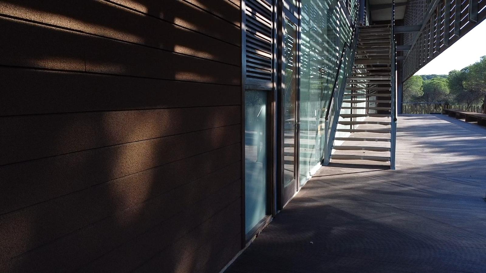
Copy: THERMOCORK RESIDENCIAL · THERMOCORK INDUSTRIA · THERMOCORK SATE · THERMOCORK RENOVABLES · THERMOCORK RETAIL · THERMOCORK AMIANTO. Seis soluciones, un mismo material 100% natural, para cada necesidad constructiva.
Visual: Fotografía real de aplicación THERMOCORK mostrando la versatilidad de la gama.
0 comentarios▶
LinkedInPostREAL
Infografía Corporativa — THERMOCORK en cifras
thermocork-m1d1-li · Origen: REAL
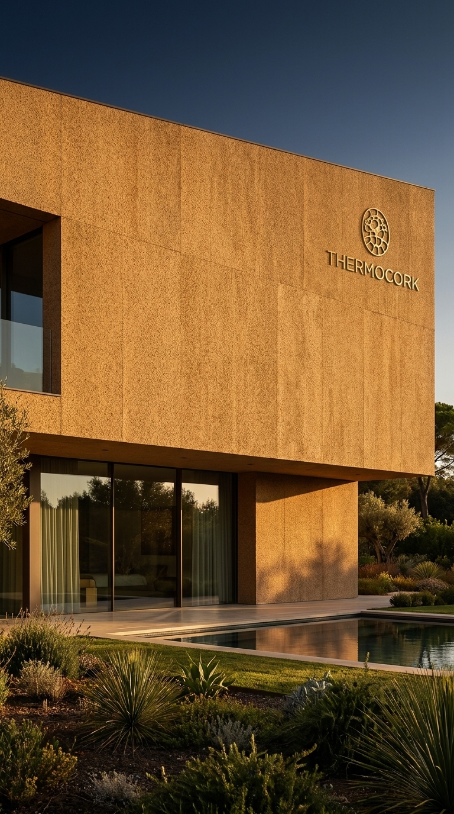
Copy: El corcho proyectado de THERMOCORK no es solo un revestimiento: es un sistema integral de aislamiento térmico, acústico y de protección. Desglosamos sus ventajas técnicas y su impacto en la edificación contemporánea.
Visual: Fotografía real del origen natural del corcho y su aplicación arquitectónica.
0 comentarios▶
Mes 1 — Día 4
InstagramReelREAL
Acústica en hostelería: Restaurante Madrid
thermocork-m1d4-ig · Origen: REAL
VIDEO REAL · Restaurante Madrid
Copy: Así se transforma el confort acústico de un restaurante en Madrid con THERMOCORK. Absorción de hasta 38 dB para espacios donde la conversación es prioridad. Sin obras invasivas, con acabado premium.
Visual: Vídeo real del interior del restaurante con aplicación de corcho proyectado en techos.
Propuesta: Subtítulos con datos de reducción de decibelios. Corte a los 15 segundos para Stories.
0 comentarios▶
LinkedInPostREAL
THERMOCORK en hostelería: confort acústico premium
thermocork-m1d4-li · Origen: REAL
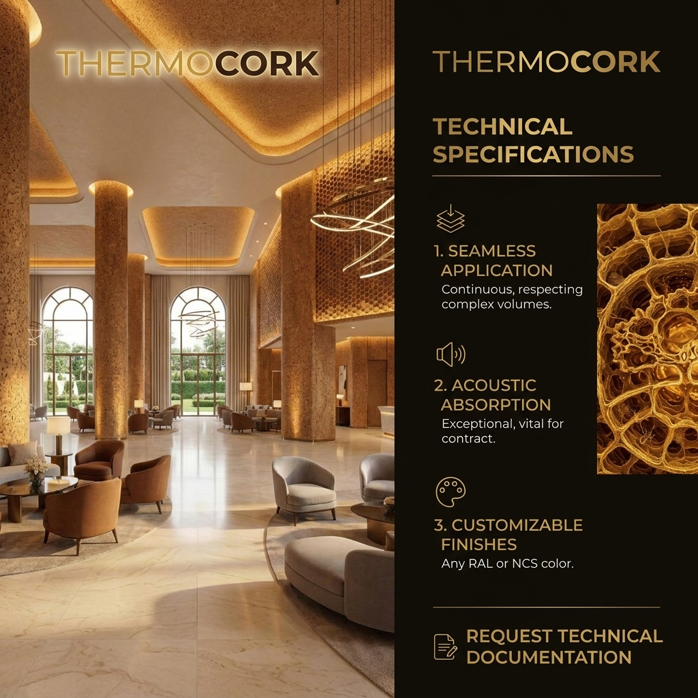
Copy: Los espacios de hostelería exigen equilibrio entre estética y funcionalidad. THERMOCORK absorbe hasta 38 dB con un acabado continuo que integra diseño y bienestar.
Visual: Fotografía real de aplicación en techo de restaurante con acabado impecable.
0 comentarios▶
FacebookPostREAL
Restaurante Madrid: antes y después del aislamiento acústico
thermocork-m1d4-fb · Origen: REAL
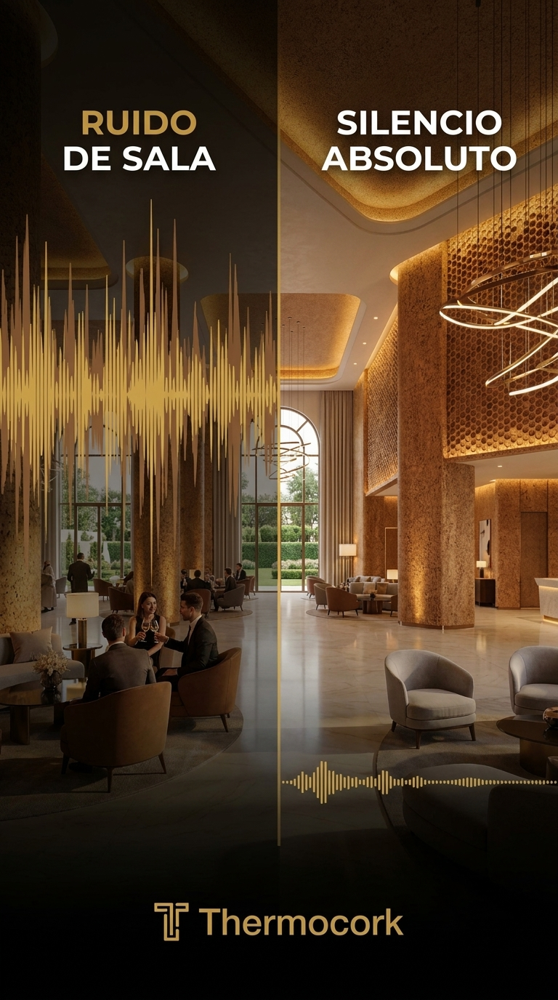
Copy: La acústica marca la diferencia en la experiencia del cliente. En este restaurante de Madrid, THERMOCORK redujo el ruido ambiental con un acabado que respeta la identidad del local.
Visual: Fotografía real del resultado final en el restaurante.
0 comentarios▶
Mes 1 — Día 5
Mes 1 — Día 6
InstagramPostREAL
Textura real, rendimiento real
thermocork-m1d6-ig · Origen: REAL
Copy: La textura de THERMOCORK no es decorativa: es funcional. Cada poro trabaja para aislarte del frío, del calor y del ruido. Naturaleza en estado puro.
Visual: Fotografía macro real de la textura del corcho proyectado.
0 comentarios▶
Mes 1 — Día 7
InstagramReelREAL
Motorhome, yates y espacios móviles con THERMOCORK
thermocork-m1d7-ig · Origen: REAL
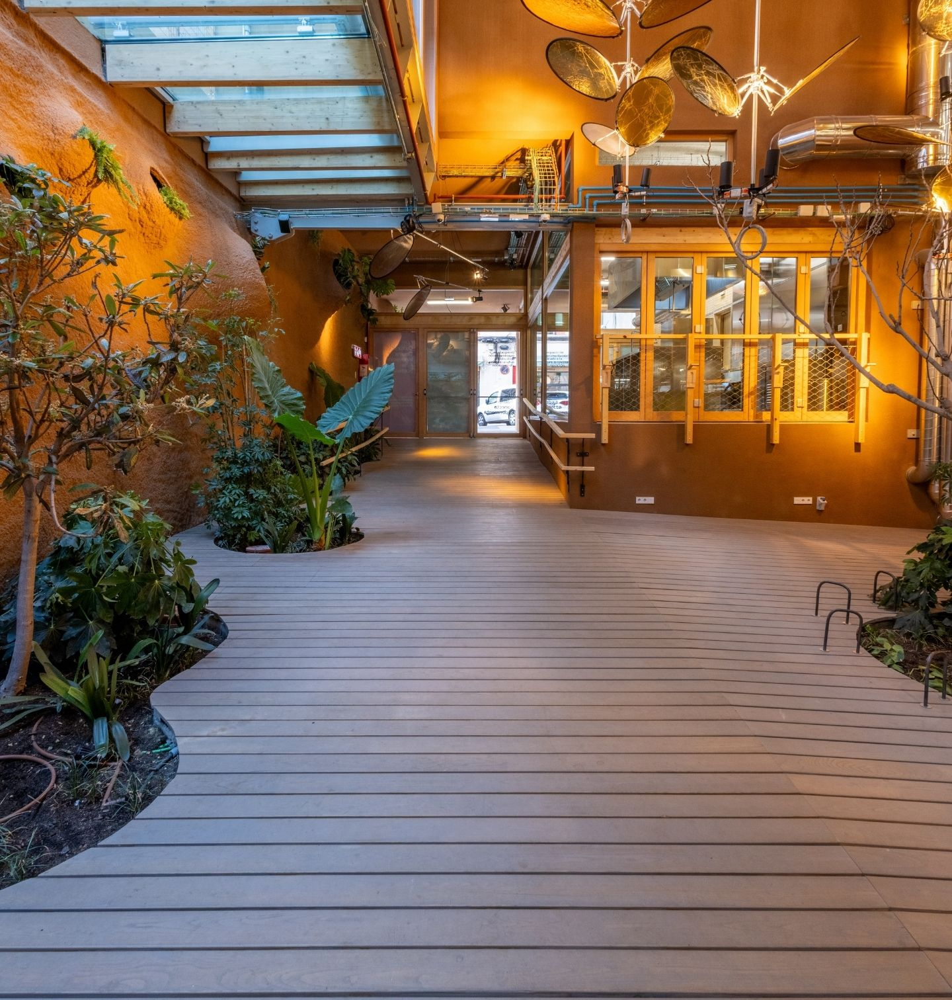
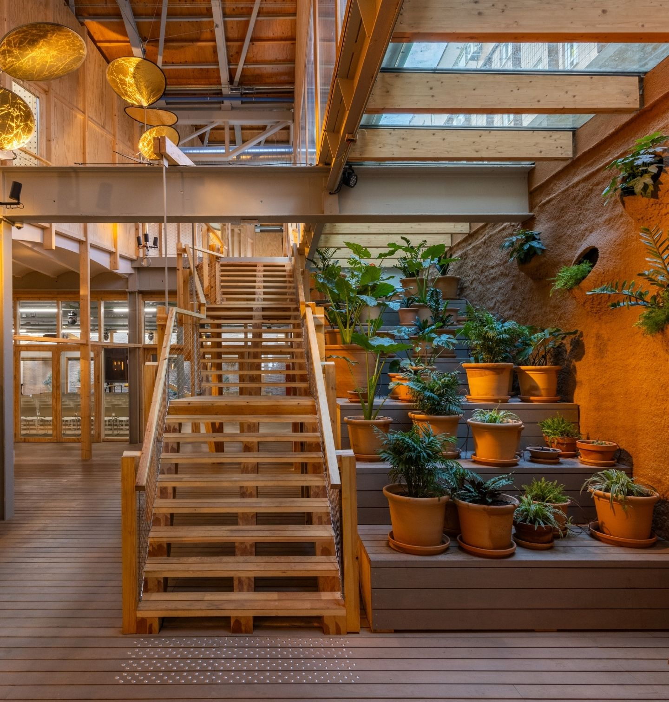
Copy: THERMOCORK no solo se proyecta en edificios. Su ligereza y flexibilidad lo convierten en aliado de motorhomes, yates y espacios móviles que exigen aislamiento sin peso.
Visual: Carrusel de 4 fotografías reales del proceso completo de aplicación.
0 comentarios▶
FacebookVideoREAL
Corcho Impermeable: demostración en obra
thermocork-m1d8-fb · Origen: REAL
VIDEO REAL · Corcho Impermeable
Copy: THERMOCORK es impermeable y transpirable al mismo tiempo. Vea cómo el agua no penetra mientras el material permite la respiración del edificio. Protección real, certificada en obra.
Visual: Vídeo real de demostración de impermeabilidad con agua sobre corcho proyectado.
Propuesta: Añadir texto superpuesto con la certificación de permeabilidad al inicio del vídeo.
0 comentarios▶
LinkedInPostREAL
Proceso constructivo con corcho proyectado
thermocork-m1d8-li · Origen: REAL
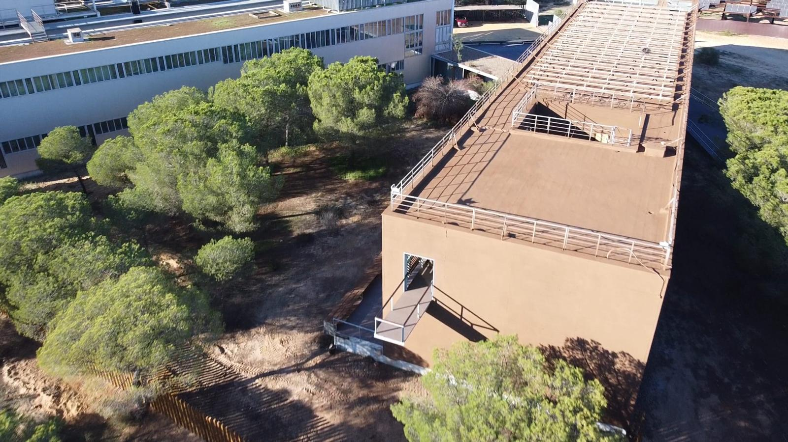
Copy: La ejecución de THERMOCORK no requiere andamiajes invasivos ni tiempos de obra prolongados. Una solución B2B eficiente para arquitectos y constructores.
Visual: Fotografía real de fachada con corcho proyectado y vegetación integrada.
0 comentarios▶
Mes 1 — Día 11
InstagramReelREAL
Boutique hotel con alma de corcho
thermocork-m1d11-ig · Origen: REAL
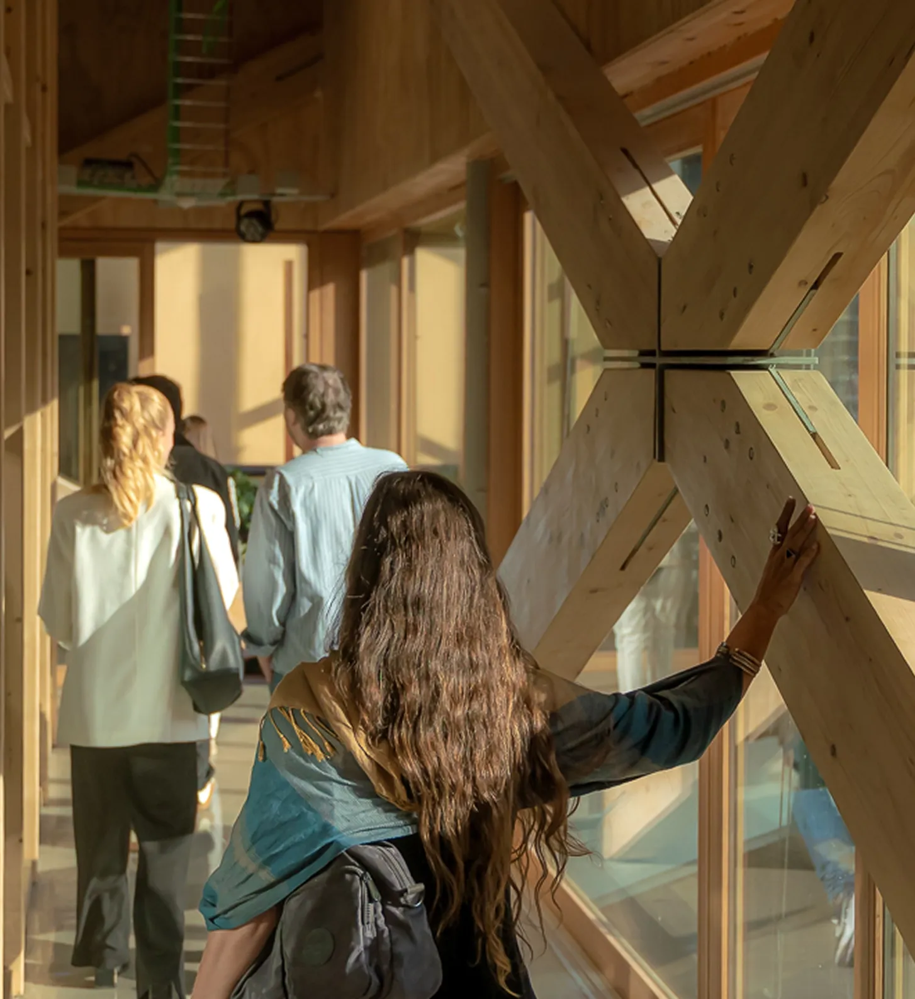
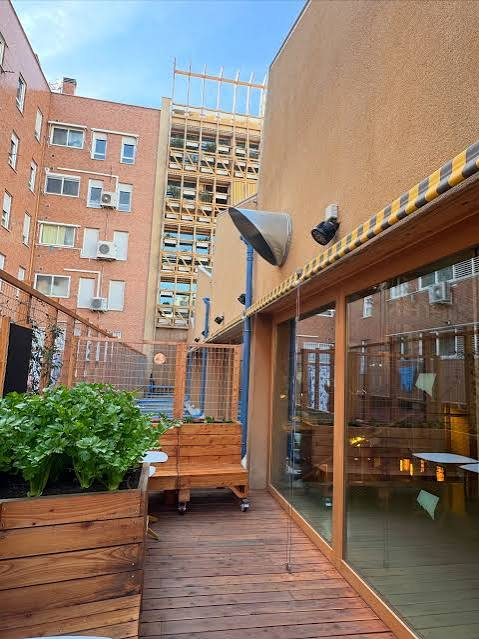
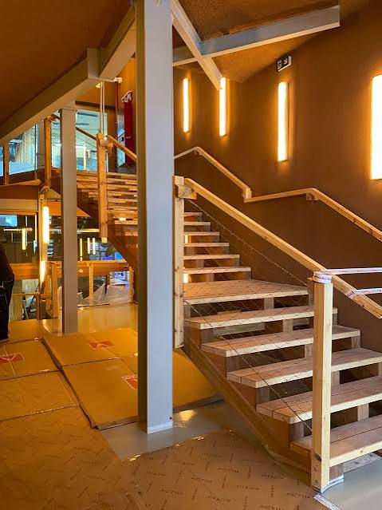
Copy: Diseño, confort y sostenibilidad en cada detalle. Así se integra THERMOCORK en boutiques y hoteles boutique donde la experiencia del huésped es prioridad.
Visual: Fotografía real de habitación o área común con corcho proyectado.
0 comentarios▶
LinkedInPostREAL
THERMOCORK en hospitality: ROI por confort
thermocork-m1d11-li · Origen: REAL
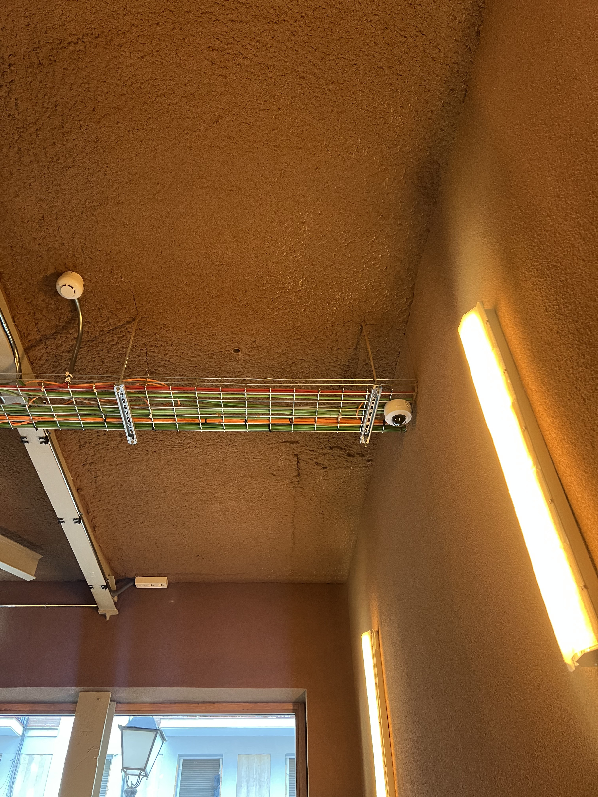
Copy: El sector hospitality invierte en confort porque sabe que se traduce en reseñas y repetición. THERMOCORK aísla acústicamente con un coste por m² altamente competitivo.
Visual: Fotografía real de detalle de fachada con acabado impecable.
0 comentarios▶
LinkedInPostREAL
Dossier técnico: especificaciones THERMOCORK
thermocork-m1d13-li · Origen: REAL
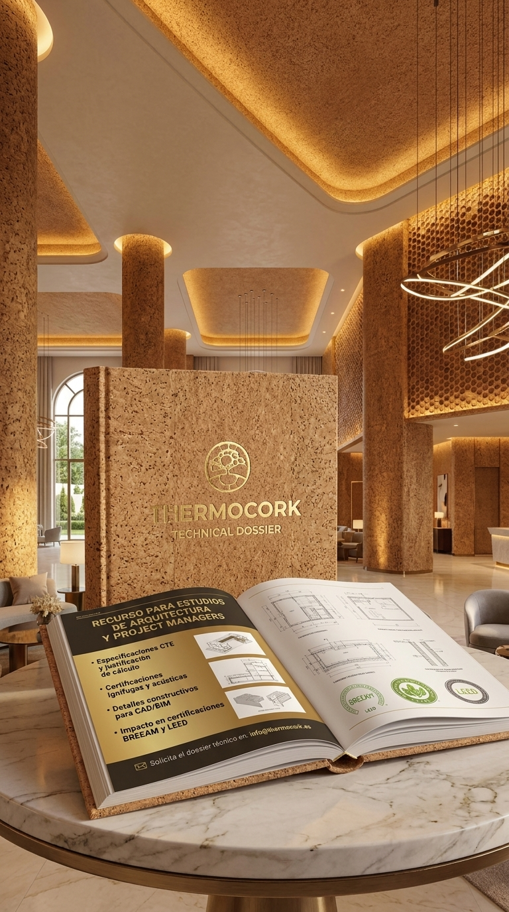
Copy: Para arquitectos y aparejadores: disponemos de dossier técnico completo con fichas de producto, certificaciones y detalles constructivos. Solicítalo sin compromiso.
Visual: Fotografía real de mampara o cartela técnica en obra con THERMOCORK.
0 comentarios▶
Mes 1 — Día 14
InstagramReelREAL
Obra Ibiza: Techo Frío en acción — Parte 1
thermocork-m1d14-ig · Origen: REAL
VIDEO REAL · Obra Ibiza Techo Frío
Copy: Iniciamos serie desde una obra real en Ibiza: aplicación de THERMOCORK TC MAX SRI 106 como solución de techo frío. Reflexión solar del 86% y reducción de temperatura de hasta 6 °C. Parte 1: preparación y primeras pasadas.
Visual: Vídeo real de aplicación de corcho proyectado en cubierta industrial en Ibiza.
Propuesta: Insertar gráfico de temperatura antes/después al minuto 0:20.
0 comentarios▶
FacebookVideoREAL
Obra Ibiza: avance de cubierta — Parte 2
thermocork-m1d14-fb · Origen: REAL
VIDEO REAL · Avance Obra Ibiza
Copy: Continuamos en Ibiza. Segunda fase de aplicación de THERMOCORK en cubierta industrial. La velocidad de ejecución no sacrifica calidad: 500 m²/día con acabado uniforme y sin juntas.
Visual: Secuencia de 2 fotografías reales de restaurante con corcho proyectado.
0 comentarios▶
FacebookVideoREAL
Restaurante Madrid: ambiente controlado
thermocork-m1d18-fb · Origen: REAL
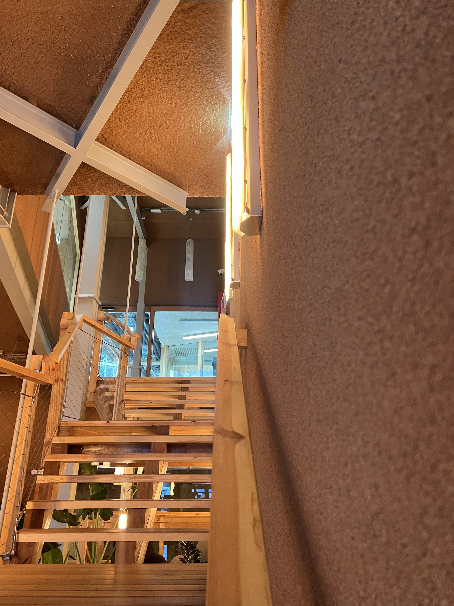
Copy: El éxito de un restaurante pasa por los sentidos. THERMOCORK controla el ruido ambiental para que el sabor y la conversación sean los protagonistas.
Visual: Fotografía real del interior del restaurante con acabado THERMOCORK.
0 comentarios▶
LinkedInPostREAL
Proyecto restauración: acústica sin obras invasivas
thermocork-m1d18-li · Origen: REAL
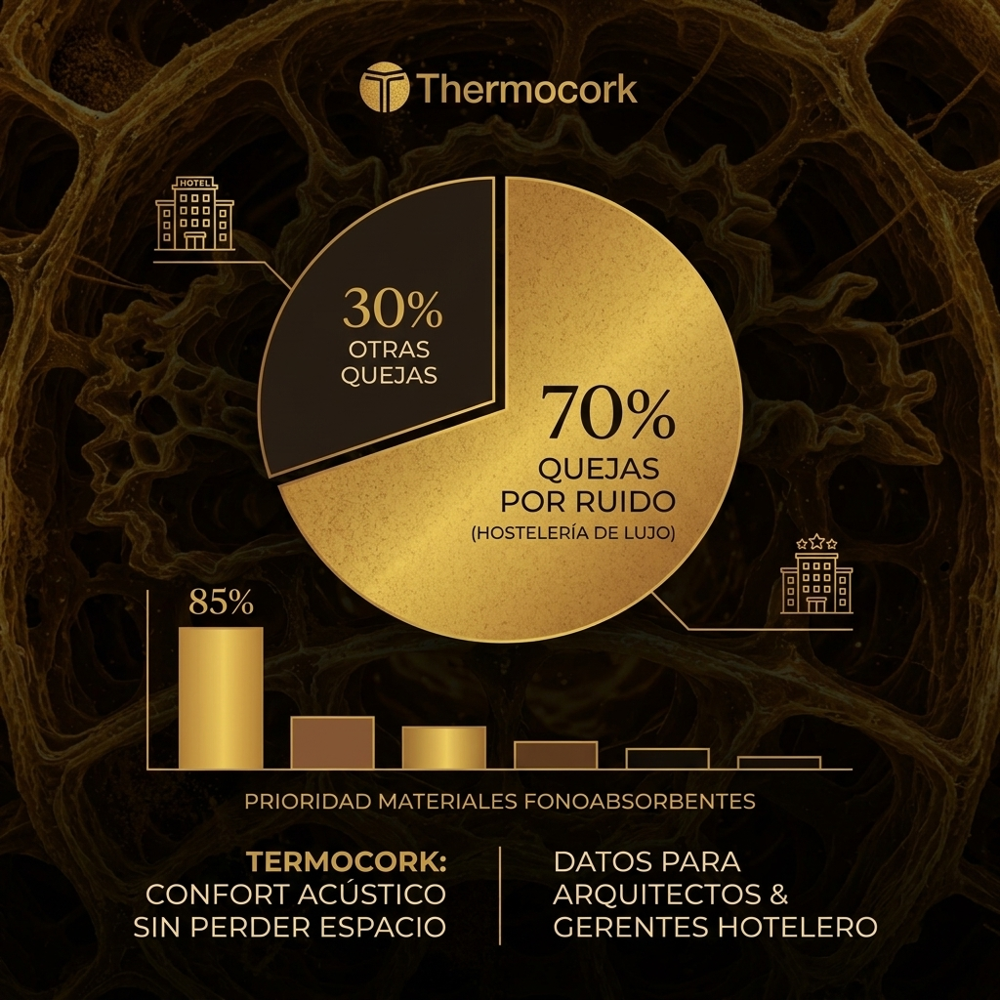
Copy: Reforma de restaurante con THERMOCORK sin cierre del negocio. Solución proyectada en horario nocturno, secado rápido y apertura al día siguiente.
Visual: Fotografía real de estructura protegida con corcho proyectado.
0 comentarios▶
Mes 1 — Día 21
InstagramReelGENERADO
Villa de verano con THERMOCORK: diseño bioclimático
thermocork-m1d21-ig · Origen: IA
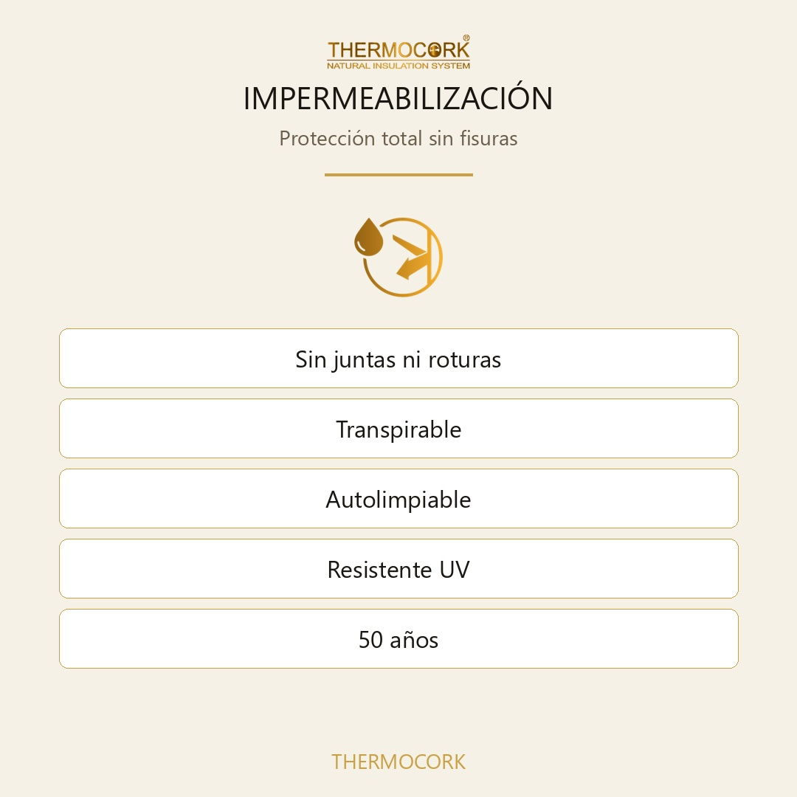
Copy: Villa de verano que respira con THERMOCORK. Fachada bioclimática que reduce la temperatura interior sin consumir energía. Diseño y sostenibilidad en equilibrio perfecto.
Visual: Reel con renders de villa y datos de eficiencia energética.
0 comentarios▶
Mes 1 — Día 22
InstagramCarruselREAL
Bodega protegida con THERMOCORK: control higrométrico
thermocork-m1d22-ig · Origen: REAL
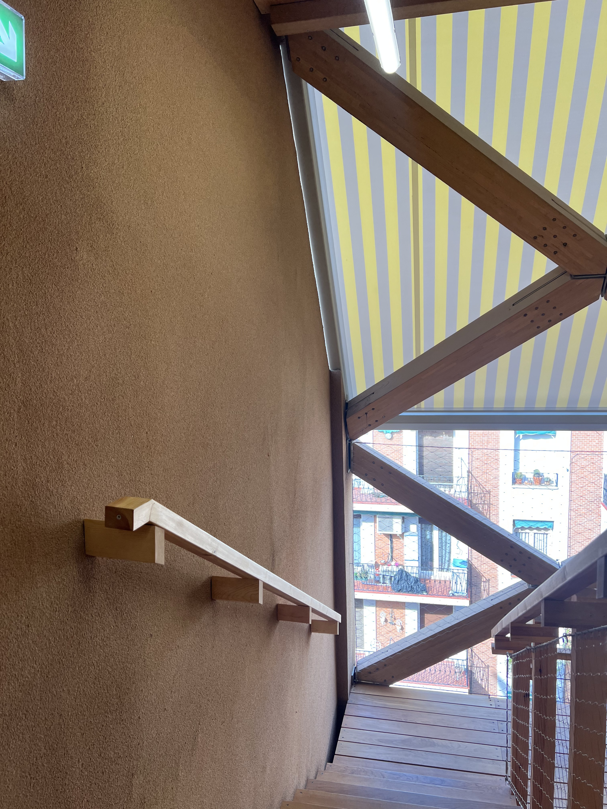
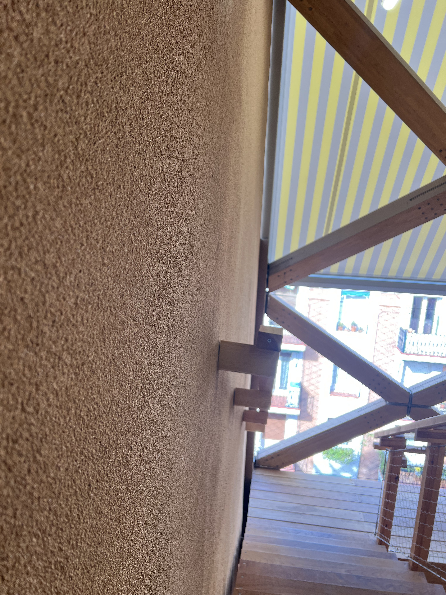
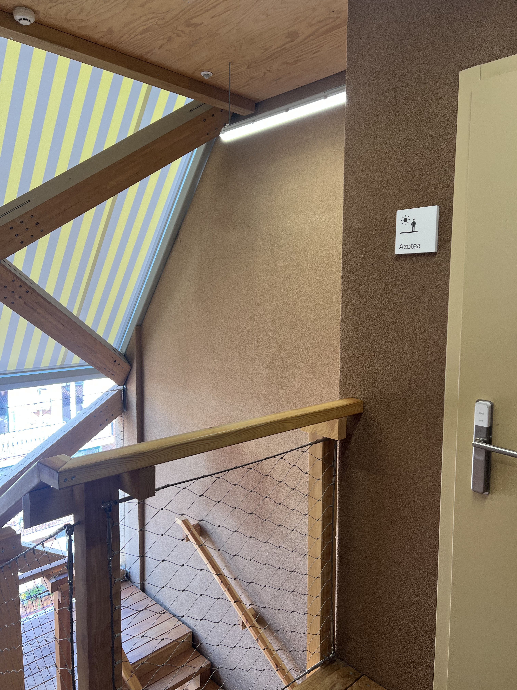
Copy: La bodega perfecta mantiene temperatura y humedad constantes. THERMOCORK regula el ambiente naturalmente, protegiendo el vino y la estructura con un mismo gesto.
Visual: Carrusel de 3 fotografías reales de bodega con corcho proyectado.
0 comentarios▶
FacebookPostREAL
Bodegas y caves: THERMOCORK como aliado de la enología
thermocork-m1d22-fb · Origen: REAL
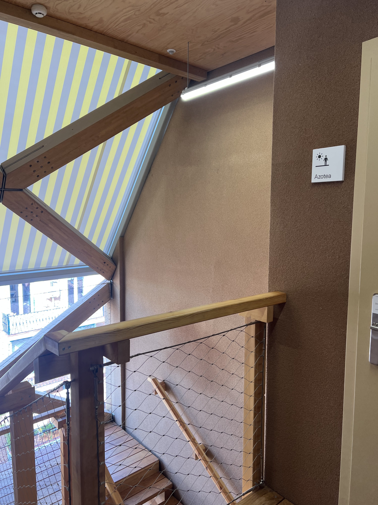
Copy: El corcho natural y el vino ya son familia. THERMOCORK lleva esa relación a la arquitectura: control térmico, higrométrico y acústico en bodegas y caves.
Visual: Fotografía real de obra representativa de la cartera de proyectos.
0 comentarios▶
Mes 1 — Día 26
InstagramCarruselREAL
Agenda THERMOCORK: próximas obras y eventos
thermocork-m1d26-ig · Origen: REAL
Copy: Madrid, Barcelona, Valencia y Bilbao. Estas son las próximas obras donde THERMOCORK marcará la diferencia. Síguenos para ver el proceso paso a paso.
Visual: Fotografía real de obra en curso o cartel de agenda de eventos.
0 comentarios▶
FacebookPostREAL
Formación continua: equipo THERMOCORK certificado
thermocork-m1d26-fb · Origen: REAL
Copy: Detrás de cada obra hay un equipo certificado. THERMOCORK invierte en formación continua para garantizar la mejor aplicación y el cumplimiento normativo.
Visual: Fotografía real de equipo técnico en formación o aplicando en obra.
0 comentarios▶
Mes 1 — Día 27
InstagramPostREAL
Ecológico por naturaleza, eficiente por diseño
thermocork-m1d27-ig · Origen: REAL
Copy: THERMOCORK no contiene disolventes, VOC ni aditivos tóxicos. Su composición natural garantiza calidad del aire interior y respeto al medio ambiente.
Visual: Fotografía real de fachada ecológica con corcho proyectado.
0 comentarios▶
LinkedInPostREAL
Equipo THERMOCORK: profesionales del corcho
thermocork-m1d27-li · Origen: REAL
Copy: Conoce al equipo que hace posible cada proyecto THERMOCORK. Ingenieros, aplicadores y técnicos de soporte trabajando por una arquitectura más eficiente.
Visual: Reel con 5 fotografías reales de cierre de mes.
0 comentarios▶
FacebookVideoREAL
Madrid Nave Industrial: Techo Frío — Parte 1
thermocork-m1d28-fb · Origen: REAL
VIDEO REAL · Madrid Nave Industrial
Copy: Arrancamos en Madrid: nave industrial que necesitaba reducir la temperatura interior sin parar la producción. THERMOCORK TC MAX SRI 106 aplicado en techo frío. Parte 1: acceso y preparación.
Visual: Vídeo real del interior de la nave y techo antes de la aplicación.
Propuesta: Añadir overlay con temperatura ambiental en tiempo real.
0 comentarios▶
LinkedInPostREAL
Resultados medibles en nave industrial
thermocork-m1d28-li · Origen: REAL
Copy: La eficiencia energética en industria se mide en números. THERMOCORK reduce la demanda de climatización un 30% en naves logísticas y productivas.
Visual: Fotografía real de nave industrial con corcho proyectado en cubierta.
0 comentarios▶
Mes 1 — Día 29
Mes 1 — Día 30
LinkedInPostGENERADO
Cierre de Mes 1: resumen de lanzamiento
thermocork-m1d30-li · Origen: IA
Copy: 30 días conociendo THERMOCORK: 6 familias de producto, obras documentadas en Madrid, Ibiza y Galicia, ventajas técnicas certificadas y aplicaciones reales. ¿Listo para el Mes 2?
Visual: Infografía resumen con estadísticas del mes y mapa de obras.
0 comentarios▶
Mes 2
Mes 2 — Día 1
LinkedInArtículoGENERADO
Industria 4.0 y eficiencia energética: el papel del corcho proyectado
thermocork-m2d1-li · Origen: IA
Copy: La industria moderna necesita edificios inteligentes. THERMOCORK INDUSTRIA reduce la demanda energética un 30%, amortizándose en pocos años y mejorando las certificaciones LEED y BREEAM.
Visual: Vídeo real del interior del restaurante mostrando detalles de acabado.
Propuesta: Añadir comparativa de niveles de ruido antes/después con medidor.
0 comentarios▶
Mes 2 — Día 3
FacebookPostREAL
Transformación real con THERMOCORK
thermocork-m2d3-fb · Origen: REAL
Copy: La transformación empieza con un material que respeta la estructura y aporta eficiencia. THERMOCORK se adapta a cualquier superficie con acabado premium.
Visual: Fotografía real de aplicación en techo de espacio comercial.
0 comentarios▶
Mes 2 — Día 12
LinkedInPostREAL
THERMOCORK Retail: espacios que venden confort
thermocork-m2d12-li · Origen: REAL
Copy: Tiendas, showrooms y centros comerciales necesitan ambientes controlados. THERMOCORK RETAIL aísla térmica y acústicamente sin cerrar el local ni interrumpir la actividad comercial.
Visual: Vídeo real nocturno del restaurante con iluminación y acabado THERMOCORK.
Propuesta: Añadir música ambiental suave y textos de datos de absorción.
0 comentarios▶
Mes 2 — Día 14
FacebookVideoREAL
Obra residencial: protección y estética
thermocork-m2d14-fb · Origen: REAL
Copy: Fachada y cubierta protegidas con THERMOCORK. Un proyecto residencial donde la eficiencia energética no renuncia al diseño. Acabado uniforme, sin juntas.
Visual: Fotografía real de fachada y cubierta residencial.
0 comentarios▶
Mes 2 — Día 15
LinkedInPostREAL
Proyecto en climas extremos: Galicia
thermocork-m2d15-li · Origen: REAL
Copy: Galicia, tierra de lluvia y pizarra. Protegemos esta cubierta tradicional con THERMOCORK, respetando la estética local y aportando impermeabilidad total.
Visual: Fotografía real de cubierta de pizarra protegida con corcho proyectado.
0 comentarios▶
Mes 2 — Día 16
Mes 2 — Día 17
FacebookVideoREAL
Impermeabilización Galicia: Pizarra — Parte 1
thermocork-m2d17-fb · Origen: REAL
VIDEO REAL · Galicia Pizarra Parte 1
Copy: Galicia, tierra de lluvia y pizarra. Protegemos esta cubierta tradicional con THERMOCORK, respetando la estética local y aportando impermeabilidad total. Parte 1: estado inicial y diagnóstico.
Visual: Vídeo real de cubierta de pizarra antes de la intervención.
Propuesta: Añadir flechas indicando filtraciones en la primera mitad del vídeo.
0 comentarios▶
Mes 2 — Día 18
InstagramCarruselREAL
Textura natural en fachada
thermocork-m2d18-ig · Origen: REAL
Copy: La textura de THERMOCORK no es decorativa: es funcional. Cada poro trabaja para aislarte del frío, del calor y del ruido. Naturaleza en estado puro.
Visual: Fotografía macro real de la textura del corcho proyectado.
0 comentarios▶
Mes 2 — Día 19
FacebookPostREAL
Decoración con corcho: tendencias 2026
thermocork-m2d19-fb · Origen: REAL
Copy: El corcho proyectado es tendencia en decoración 2026. Descubre cómo THERMOCORK se integra en los estilos más demandados por arquitectos de interiores.
Visual: Story con foto real de dossier/obra y sticker "Link".
0 comentarios▶
Mes 2 — Día 22
InstagramReelREAL
Madrid Nave Industrial: Techo Frío — Parte 1
thermocork-m2d22-ig · Origen: REAL
VIDEO REAL · Madrid Nave Industrial 1
Copy: Arrancamos en Madrid: nave industrial que necesitaba reducir la temperatura interior sin parar la producción. THERMOCORK TC MAX SRI 106 aplicado en techo frío. Parte 1: acceso y preparación.
Visual: Vídeo real del interior de la nave y techo antes de la aplicación.
Propuesta: Añadir overlay con temperatura ambiental en tiempo real.
0 comentarios▶
Mes 2 — Día 23
FacebookVideoREAL
Madrid Industrial: aplicación en techo — Parte 2
thermocork-m2d23-fb · Origen: REAL
VIDEO REAL · Madrid Industrial 2
Copy: Avance de aplicación en nave industrial de Madrid. Equipo de proyección trabajando en altura con seguridad y precisión. El cambio térmico ya se nota.
Visual: Carrusel de 4 slides ilustrando aplicaciones sectoriales.
0 comentarios▶
Mes 2 — Día 26
FacebookPostGENERADO
Autolimpiable: menos mantenimiento, más estética
thermocork-m2d26-fb · Origen: IA
Copy: La naturaleza del corcho hace que THERMOCORK sea autolimpiable. La lluvia y el viento eliminan la suciedad acumulada, manteniendo la fachada impecable año tras año.
Visual: Secuencia de fachada antes/después de la lluvia mostrando limpieza natural.
0 comentarios▶
Mes 2 — Día 27
InstagramPostGENERADO
Inhibidor de corrosión: protección metálica integrada
thermocork-m2d27-ig · Origen: IA
Copy: THERMOCORK incorpora propiedades inhibitoras de corrosión, prolongando la vida útil de estructuras metálicas, vigas y forjados expuestos. Protección doble: térmica y química.
Visual: Story vertical con números grandes y fondo de textura corcho.
0 comentarios▶
Mes 2 — Día 29
FacebookVideoGENERADO
500 m² al día: productividad real
thermocork-m2d29-fb · Origen: IA
Copy: Rendimiento de 500 m²/día de aplicación con THERMOCORK SATE. Menos tiempo de obra, menos costes indirectos y entrega antes de plazo. La eficiencia también se mide en metros cuadrados.
Visual: Secuencia de aplicación con contador de m² aplicados.
0 comentarios▶
Mes 2 — Día 30
LinkedInArtículoGENERADO
Resumen Mes 2: profundización sectorial
thermocork-m2d30-li · Origen: IA
Copy: Mes 2 nos ha llevado por restaurantes, bodegas, naves industriales y viviendas. Profundización real en cada sector con resultados medibles. Preparados para el Mes 3 de conversión.
Visual: Infografía resumen con métricas y comparativas mensuales.
0 comentarios▶
Mes 3
Mes 3 — Día 1
LinkedInArtículoGENERADO
Comparativas técnicas: THERMOCORK vs soluciones tradicionales
thermocork-m3d1-li · Origen: IA
Copy: Análisis técnico comparativo para arquitectos y prescriptores. THERMOCORK gana en sostenibilidad, durabilidad y eficiencia energética frente a aislamientos tradicionales.
Visual: Reel con montaje de fotografías reales y datos de acústica.
Propuesta: Incluir testimonio del propietario en texto al final del Reel.
0 comentarios▶
Mes 3 — Día 3
FacebookPostGENERADO
Ahorro energético: cálculo para tu edificio
thermocork-m3d3-fb · Origen: IA
Copy: Calcula cuánto puedes ahorrar con THERMOCORK en tu edificio. Introduce los metros cuadrados y el tipo de uso: vivienda, oficina, nave o local comercial.
Visual: Carrusel de 4 slides con datos técnicos destacados.
0 comentarios▶
Mes 3 — Día 5
FacebookVideoGENERADO
CTA: Agenda tu visita técnica gratuita
thermocork-m3d5-fb · Origen: IA
Copy: ¿Tienes un proyecto en mente? Agenda una visita técnica gratuita. Nuestros especialistas evaluarán tu edificio y propondrán la solución THERMOCORK óptima.
Visual: Video motion graphics con llamada a la acción y contacto.
0 comentarios▶
Mes 3 — Día 6
InstagramPostGENERADO
Prueba social: testimonios de arquitectos
thermocork-m3d6-ig · Origen: IA
Copy: "THERMOCORK nos permitió cumplir con la normativa CTE sin sacrificar estética". Arquitectos que ya han prescrito THERMOCORK comparten su experiencia.
Copy: Descarga el dossier técnico actualizado 2026 con fichas de producto, certificaciones y detalles constructivos. Información rigurosa para arquitectos e ingenieros.
Visual: Story vertical con encuesta sobre timing de rehabilitación.
0 comentarios▶
Mes 3 — Día 9
FacebookVideoREAL
Impermeabilización Galicia: proceso — Parte 2
thermocork-m3d9-fb · Origen: REAL
VIDEO REAL · Galicia Pizarra Parte 2
Copy: Seguimos en Galicia. Aplicación de THERMOCORK sobre pizarra con técnica de proyección húmeda. El resultado es una capa continua que sella, aísla y respeta la arquitectura tradicional.
Visual: Vídeo real del proceso de proyección en cubierta inclinada.
Propuesta: Música tradicional gallega sutil de fondo y textos de datos técnicos.
0 comentarios▶
Mes 3 — Día 10
Mes 3 — Día 11
LinkedInPostREAL
Proyecto residencial: valoración técnica
thermocork-m3d11-li · Origen: REAL
Copy: Análisis técnico de proyecto residencial con THERMOCORK. Reducción de puentes térmicos, mejora de estanqueidad y aumento de confort interior documentado.
Visual: Carrusel de 4 slides con caso de éxito documentado.
0 comentarios▶
Mes 3 — Día 14
FacebookVideoGENERADO
Madrid Nave Industrial: recorrido final estilizado
thermocork-m3d14-fb · Origen: IA
Copy: Recorrido completo de la nave industrial de Madrid tras la aplicación de THERMOCORK. Espacios más frescos, menor consumo energético y mayor confort para el equipo.
Copy: ¿Eres aplicador de corcho proyectado? Únete a la red de instaladores certificados THERMOCORK. Formación, soporte técnico y cartera de obras garantizada.
Visual: Carrusel de 5 slides con motivos para elegir THERMOCORK.
0 comentarios▶
Mes 3 — Día 22
Mes 3 — Día 23
FacebookVideoREAL
Madrid Nave Industrial: resultado final — Parte 3
thermocork-m3d23-fb · Origen: REAL
VIDEO REAL · Madrid Industrial Final
Copy: Obra terminada en Madrid. Nave industrial con THERMOCORK TC MAX SRI 106 en cubierta. Menor temperatura interior, menor consumo de climatización y mayor confort para los trabajadores.
Visual: Vídeo real del techo terminado con recorrido por el interior de la nave.
Propuesta: Añadir pantalla final con testimonio del responsable de mantenimiento.
0 comentarios▶
Mes 3 — Día 24
Mes 3 — Día 25
Mes 3 — Día 26
FacebookPostREAL
Equipo THERMOCORK en obra: fotografía del día
thermocork-m3d26-fb · Origen: REAL
Copy: La calidad de THERMOCORK depende de quien lo aplica. Nuestros aplicadores certificados garantizan el espesor, la uniformidad y el acabado en cada proyecto.
.JPG)